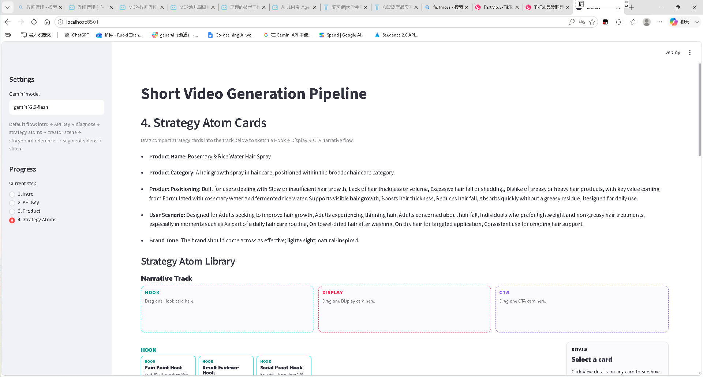
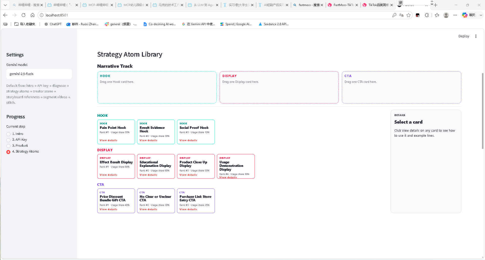
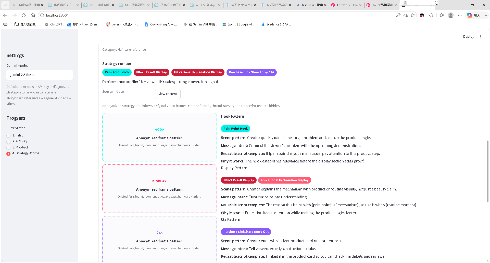

流程割裂
商品信息、策略、脚本、prompt 在多个工具间反复搬运，创作上下文容易丢失。
AI Product Portfolio · Overseas TikTok Commerce
面向拓展海外 TikTok / TikTok Shop 市场的跨境商家与内容投放团队，设计一个从商品诊断、爆款视频召回、广告策略推荐到多模态视频生成与局部编辑的 AIGC 创作工作流。
01 · User Story
作为一个 <角色 Who>，我想要 <活动 What>，以便于 <商业价值 Why>。
作为一个正在拓展海外 TikTok / TikTok Shop 市场的跨境电商商家或内容投放团队，我希望输入商品信息、目标市场和卖点后，系统能够基于相似高表现视频推荐适合当前商品的 Hook / Display / CTA 广告策略，并快速生成可局部修改的 AI 带货视频，以便降低海外素材制作与 A/B 测试成本，提升短视频广告的生成效率和策略一致性。
02 · Why This User Matters
海外 TikTok / TikTok Shop 的机会不只是流量增长，而是内容消费、商品发现与交易链路正在合并。跨境商家需要持续生成符合当地平台语境、受众偏好和广告策略的短视频带货素材。
03 · User Journey Map
用户旅程地图用于把“用户是谁、现在怎么做、哪里痛、产品机会在哪里”放进同一张表。它比单独罗列功能更能体现产品判断。
| 阶段 | 用户行为 | 常用工具 / 方法 | 当前痛点 | 产品机会 |
|---|---|---|---|---|
| 1. 准备商品 | 整理商品图、标题、卖点、目标市场 | 商品详情页、Excel、Notion | 卖点很多，但不知道哪些适合短视频表达 | 产品诊断：识别品类、卖点、人群、场景和平台语境 |
| 2. 寻找参考 | 搜索相似商品或同品类 TikTok 爆款视频 | TikTok、Creative Center、爆款拆解网站 | 只能看到表面内容，难判断是否适合当前商品 | 基于产品诊断召回相似高表现视频 |
| 3. 拆解策略 | 拆 Hook、卖点展示、CTA、分镜 | GPT、爆款拆解工具、小云雀等 AI 工具 | 策略拆解依赖经验，容易变成模仿单条视频 | 从多条相似视频归纳 Hook / Display / CTA 策略组合 |
| 4. 生成方案 | 把策略改写成商品脚本、分镜和 prompt | GPT、文档、表格 | 策略在脚本、分镜、prompt 之间容易断裂 | 将用户选择的策略结构化注入生成链路 |
| 5. 生成视频 | 用视频模型生成片段并检查效果 | Seedance、Kling、Veo、ComfyUI | 结果不稳定，不满意时经常整条重生成 | 分阶段生成，保留满意片段，支持局部重生成 |
| 6. 修改交付 | 剪辑、对比版本、给团队或客户确认 | 剪映、CapCut、文件夹 | 多版本混乱，满意片段难复用 | 版本保存、对比、回退和片段组合 |
04 · Pain Points
商品信息、策略、脚本、prompt 在多个工具间反复搬运，创作上下文容易丢失。
用户能找到爆款视频，但不确定其策略是否适配当前商品、目标市场和平台语境。
爆款学习容易退化为复刻某条视频，而不是理解可迁移的 Hook / Display / CTA 结构。
某个镜头或 CTA 不满意时，现有流程常常只能整条重生成，满意片段也被破坏。
不同脚本、分镜、prompt 和视频片段分散，用户难以保存、对比、回退与组合。
05 · Competitive Landscape
分析范围按直接竞品、间接竞品和潜在竞品拆分，重点判断它们解决了工作流中的哪一段，以及留下了什么产品机会。
Creatify · Arcads · HeyGen · AdCreative.ai · 小云雀
解决商品/脚本到广告视频或带货视频生成，优势是成片速度快，但策略来源、策略解释和局部可控编辑通常较弱。
TikTok Creative Center · 爆款拆解网站 · GPT · 剪映 / CapCut
用户用它们找参考、拆策略、写脚本和剪辑，但这些工具没有把爆款洞察、策略迁移和生成编辑整合成连续流程。
Veo · Seedance · Kling · Runway · ComfyUI
底层视频模型会不断增强。长期竞争会从“能否生成”转向“谁更懂用户场景、策略工作流和可控迭代”。
06 · Product Opportunity
跨境商家并不只是缺少一个视频生成工具，而是缺少一个能把商品诊断、爆款参考、策略理解、脚本分镜、视频生成和局部修改串起来的连续工作流。
不直接展示 3 条爆款视频让用户模仿，而是基于 top-20 相似视频归纳 3 组可迁移策略组合。这样可以降低复制单条视频的风险，避免生成结果与参考视频不一致造成落差，同时强化策略解释和商品适配。
07 · Prototype Direction
策略页应展示系统推荐的策略组合、适配理由和可调整项，而不是只把爆款视频作为复制对象。



08 · MVP & Metrics